Next: About this document ...
MATP6600 / DSES6780 Nonlinear Programming
Midterm Exam, Fall 2007
Take Home
Due: Beginning of class, Friday, 19 October 2007.
This is to be all your own work.
You may use any result from class,
homeworks, or the books on reserve in the library.
I will have my usual office hours on Tuesday from 2-3pm and Wednesday from 11am-noon.
Do not consult anybody or anything else.
The exam consists of five questions and is worth a total of 100 points.
- (40 points + 10 points Extra Credit; each part is worth ten points.)
A quadratic programming problem can be written in the form:
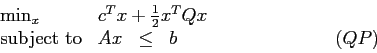
Here, 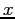 and  are 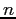-vectors, is an 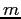-vector,
is an 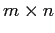 matrix, and is a symmetric 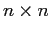 matrix.
The variables and the parameters , , , and are all real numbers.
The recession cone for this problem is
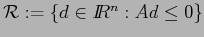
and the feasible region is
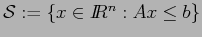.
Assume 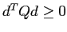 for all
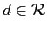.
are 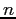-vectors, is an 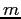-vector,
is an 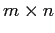 matrix, and is a symmetric 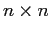 matrix.
The variables and the parameters , , , and are all real numbers.
The recession cone for this problem is
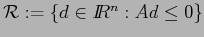
and the feasible region is
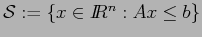.
Assume 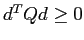 for all
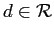.
(Hint: Questions 4 and 5 on Homework 3 are examples of problems of this form.)
- Assume there exists a feasible point and a direction
satisfying
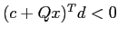 and 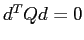. Show that the optimal value of 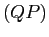 is unbounded below.
- Show that if the optimal value of is unbounded below then there exists
a point
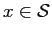 and a direction
such that
and .
- Let 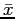 be a Karush-Kuhn-Tucker point for .
Show that
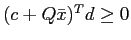 for any
.
- Let 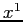, ..., 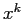 be Karush-Kuhn-Tucker points for .
Show that the following quadratic progam has a finite optimal value:
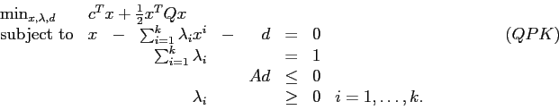
Here, , , , and are as defined before,
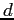 is an -vector, and each 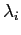 is a scalar.
- (Extra Credit: 10 points.)
Either prove that every global optimal solution to 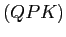 is a KKT point for
or give a counterexample.
- In the nonlinear programming problem
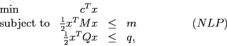
and are -vectors with 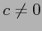,
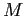 and are symmetric positive definite matrices,
and and are positive scalars.
The Lagrangian is
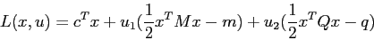
where 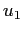 and 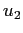 are scalars and 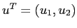.
The Lagrangian dual function 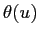 is defined in the usual way
and the Lagrangian dual problem is to maximize over the nonnegative quadrant.
- (5 points.) Show constraint qualification holds for 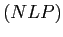 at all feasible points.
- (5 points.) Show that
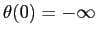.
- (10 points.) Give a general expression for for 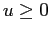, 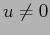.
- Now let , , and be as follows:
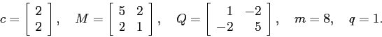
- (10 points.) Find 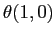, 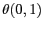, and 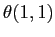,
and find the gradients of at these three points.
- (5 points.) Hence find upper and lower bounds on the optimal value of the dual problem.
(You can use a linear programming package in this part.)
- Given a symmetric real matrix , define the nonlinear program
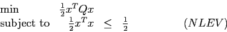
where is an -vector.
Assume has different eigenvalues.
Since is a symmetric matrix, it can be diagonalized;
that is, 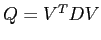, where
is a diagonal matrix
and the columns of 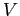 are eigenvectors of .
The columns of give an orthonormal basis for 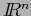.
- (5 points.) Show the optimal solution to 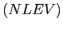 is 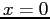 if is positive semidefinite.
- Now assume is not positive semidefinite.
- (10 points.) Show that the Karush-Kuhn-Tucker points of are the eigenvectors
of with nonpositive eigenvalue and with norm one.
- (10 points.) Show that the KKT points corresponding to one of the eigenvalues satisfy
the second order sufficient conditions, and show that the KKT points corresponding to
the other eigenvalues do not satisfy the second order necessary conditions.
What do you conclude?
Next: About this document ...
John Mitchell
2007-10-12